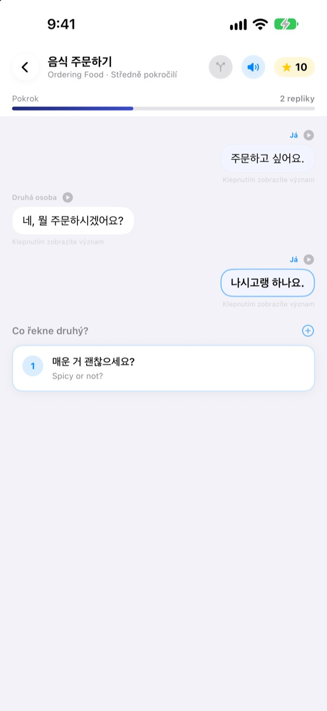
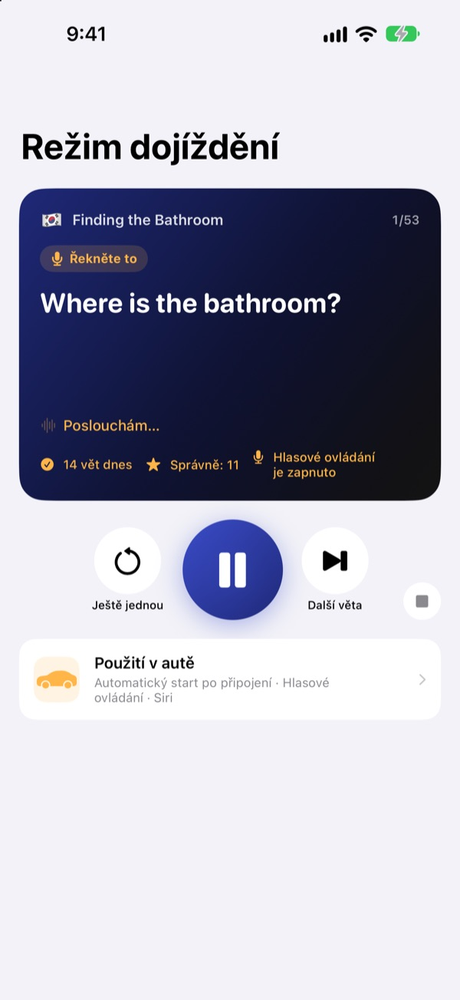
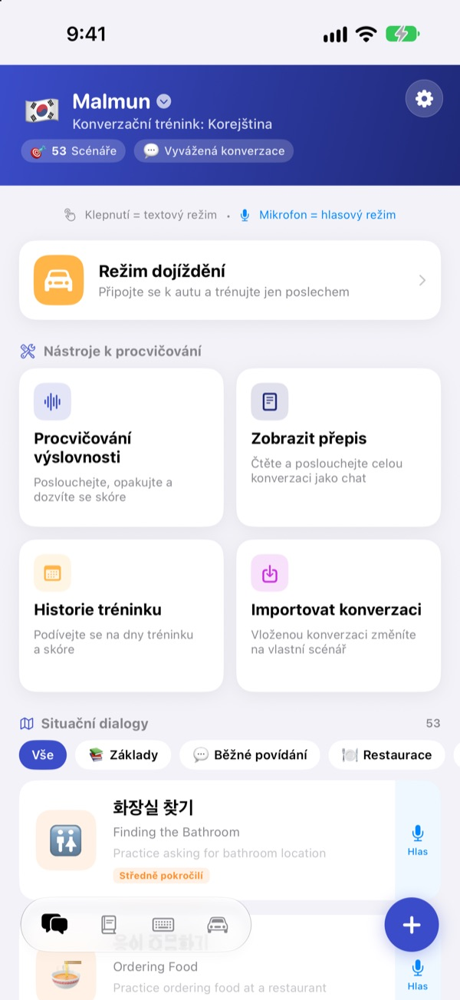
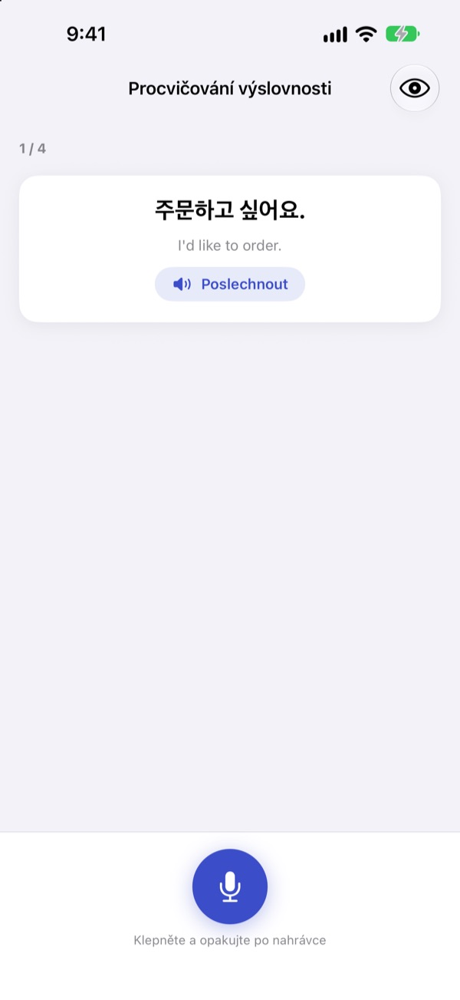

Už žádné zaseknutí.
Promluvte první.
Malmun je konverzační trenažér, ve kterém každá zvolená odpověď pošle rozhovor jinam. Učte se korejsky, japonsky, čínsky, španělsky nebo indonésky a v autě trénujte jen ušima a hlasem.
Větvené rozhovory, procvičování výslovnosti a slovník jsou zdarma.

Veďte rozhovor sami
Tohle je „Dobré ráno“, indonéský rozhovor přímo z aplikace. Každá zvolená věta stočí hovor jiným směrem.
Větu jste uměli, ale odpověď nepřišla?
V učebnici jdou rozhovory vždycky podle scénáře. Ve skutečnosti vám druhý odpoví něco, co jste nečekali. Malmun vás předem provede všemi větvemi rozhovoru, takže další větu máte připravenou, ať přijde cokoli. I cesta domů se promění v trénink.
Trénujte poslechem za jízdy
Režim dojíždění hraje z reproduktorů auta přes Bluetooth nebo CarPlay. Nejdřív uslyšíte význam, po signálu máte čas to říct sami a pak zazní odpověď jednou pomalu a jednou normálním tempem.
Přeskakujte a opakujte tlačítky na volantu, nebo řekněte next, again či slower, když jste na řadě. Při pokynech navigace se přehrávání pozastaví.

Všechny situace z cest i všedního dne
Každý jazyk má 53 situačních dialogů: základy, běžný hovor, restaurace, doprava, letiště, hotel, nákupy, prohlídky a nouzové situace.
Kdo se učí indonésky, dostane víc: 5 ručně psaných small talků, 3 denní kurzy po 6 scénách s týdenním rozvrhem a 100 slov na služební cestu.

Ověřte si, že jste to řekli správně
Procvičování výslovnosti vám dá skóre a barevně označí slova, která se povedla, i ta, která vám utekla.
V přepisu vidíte celý rozhovor jako chat. Poslechněte si ho vcelku, nebo skryjte významy a vyzkoušejte se.

Začít jde ve třech krocích
- 1
Vyberte jazyk
Klepněte na vlajku nahoře na domovské obrazovce. Fráze a slovíčka se ukládají pro každý jazyk zvlášť.
- 2
Otevřete rozhovor
V textovém režimu klepejte na odpovědi, nebo klepněte na mikrofon a mluvte: hlasový režim najde nejbližší odpověď.
- 3
V autě režim dojíždění
Připojte iPhone k autu a stiskněte přehrávání. Na displej se dívat nemusíte.
Ovládání režimu dojíždění
- Volant: další skladba
- Další věta
- Volant: předchozí skladba
- Stejná věta ještě jednou
- Tlačítko přehrávání
- Pauza a pokračování
next·skip- Další věta
again·repeat- Poslechnout znovu
slower·faster- Změnit rychlost čtení
next scene- Na další rozhovor
stop·pause- Ukončit trénink
- Siri: „Spustit trénink dojíždění v Malmun“
- Spustit bez dotyku iPhonu
Když je aplikace v češtině, hlasové povely říkáte anglicky. Poslouchá je jen ve chvíli, kdy jste po signálu na řadě. Aktuální věta se zobrazí v informacích o přehrávání v autě. Vlastní obrazovku v CarPlay aplikace nemá.
Skoro všechno je zdarma. Malmun Pro odemkne zbytek.
Zdarma
- Větvený small talk a denní kurzy (indonéština)
- Situační dialogy: základy a běžný hovor
- Režim dojíždění, 3 scény denně
- Výslovnost, přepis, import rozhovorů, historie tréninku
- Moje fráze, kartičky slovíček, klávesnice frází
- Sdílení scénářů s přáteli, scénáře vytvořené AI
Malmun Pro
- Všechny situační dialogy: restaurace, doprava, letiště, hotel, nákupy, prohlídky, nouzové situace
- Režim dojíždění bez omezení
- Platí pro všechny jazyky
Roční předplatné nebo jednorázový nákup navždy
Ceny najdete v aplikaci a v App Storu. Roční předplatné se automaticky obnoví, pokud ho nezrušíte nejpozději 24 hodin před koncem období.
Časté dotazy
Jaké jazyky se můžu učit?
Korejštinu, japonštinu, čínštinu, španělštinu a indonéštinu. Tlačítka a nabídky jsou česky, ale významy vět a hlasové povely jsou anglicky. Proto samotná angličtina v seznamu není.
Jak ji používat v autě?
Připojte iPhone k autu přes Bluetooth nebo CarPlay, otevřete režim dojíždění a stiskněte přehrávání. Zvuk jde z reproduktorů auta a aktuální věta se ukáže v části Právě hraje. Můžete také říct Siri „Spustit trénink dojíždění v Malmun“, nebo si jednou v aplikaci Zkratky nastavit automatizaci, která trénink spustí, jakmile se připojí CarPlay (nebo Bluetooth auta).
Poslouchá mikrofon pořád?
Ne. Poslouchá jen ve chvíli, kdy jste po signálu na řadě, přes mikrofon iPhonu, a co uslyší, se zpracuje v zařízení.
Moje výslovnost se nerozpoznává.
Rozpoznávání řeči běží v jazyce, který se učíte. Zkuste to v tišším prostředí a zkontrolujte, že je rozpoznávání řeči pro ten jazyk v zařízení stažené.
Jak přidám klávesnici?
Otevřete Nastavení ▸ Obecné ▸ Klávesnice ▸ Klávesnice ▸ Přidat novou klávesnici a vyberte klávesnici Malmun. Při psaní na ni přepnete tlačítkem se zeměkoulí. Plný přístup není potřeba. Chcete-li zobrazit méně frází, klepněte na ikonu klávesnice vpravo dole na domovské obrazovce ▸ Spravovat klávesnici.
Nevidím scénář, který sdílel kamarád.
Sdílení funguje přes iCloud, takže musíte být oba přihlášení k iCloudu. Pokud se pořád nezobrazí, aplikaci úplně zavřete a znovu otevřete.
Co potřebuji k vytváření scénářů pomocí AI?
Zadejte do aplikace vlastní API klíč Anthropic a napište téma, vznikne nový rozhovor. Všechno ostatní funguje i bez klíče.
Jak zruším předplatné nebo dostanu peníze zpět?
Platby vyřizuje Apple. Zrušit můžete v Nastavení iPhonu ▸ Účet Apple ▸ Předplatná ▸ Malmun. O vrácení peněz požádejte Apple na reportaproblem.apple.com.
Nový iPhone a Pro zmizelo.
Přihlaste se stejným Účtem Apple a v Malmun klepněte na Nastavení ▸ Malmun Pro ▸ Obnovit nákupy.
Kde se ukládá můj pokrok?
Účet nepotřebujete. Data zůstávají v zařízení a ve vašem iCloudu. Žádné reklamy ani sledování, odesílají se jen anonymní statistiky používání a hlášení chyb. Chyby a přání můžete hlásit i na GitHub Issues (github.com/M1zz/IndonesianSmallTalk/issues).
Dotazy nebo připomínky? Napište na leeo@kakao.com, použijte Nastavení ▸ Poslat zpětnou vazbu v aplikaci, nebo nám napište na Instagram: @lee25_ios.